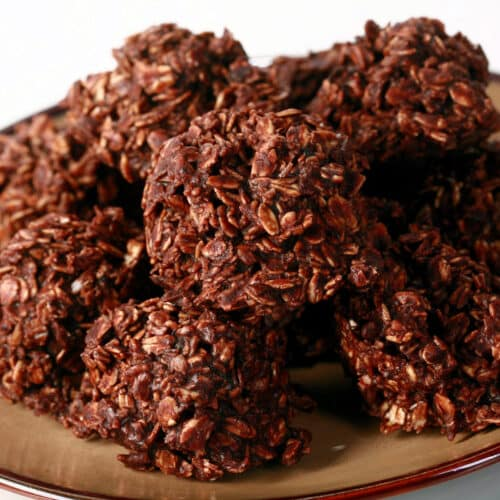

Chocolate Haystacks

Give your oven a rest with these scrumptious no-bake cookies.
Satisfy your sweet tooth in under 10 minutes with these delicious, hearty, chocolatey, peanut buttery no-bake cookies. These are my go-to when I'm craving sweets because I always have all the ingredients on hand.
The oats in these cookies are sure to fill you up and they make them healthy, right?? RIGHT?
Ingredients
- 1 c. sugar
- 1/4 c. milk
- 4 T. margarine
- 1 T. cocoa powder
- 1 tsp vanilla
- 2 c. quick oats
- 1/4 c. peanut butter
Directions
- Add sugar, milk, margarine, and cocoa powder to a medium-sized pot over medium-high heat. Let it come to a boil, stirring constantly.
- Allow cocoa mixture to rapidly boil for 1 minute. Remove from heat.
- Add vanilla. Stir.
- Add oats. Stir.
- Add peanut butter. Stir. (I like to add peanut butter a little bit at a time so it doesn't overpower the chocolate flavor. But maybe you'll like it more peanut butter forward, more power to you!)
- Lay out wax paper (or parchment paper or aluminum foil, whatever you have on hand). Drop spoonfuls of cookie mixture onto the paper, making little "haystacks". I like to use my cookie dough scoop for this, it makes them more ball-like and they don't dry out as quickly.
- Let cool and enjoy!